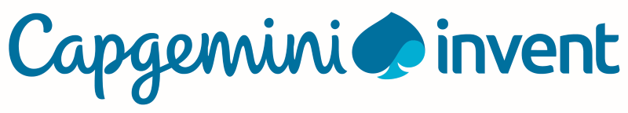

Education
-
University of Cambridge, Jesus College
PhD in Biochemistry (October 2023 - Present)
Machine Learning for enzyme optimisation, directed evolution, and single-cell sequencing, supervised by
Prof Florian Hollfelder and fully funded by Stiftung der Deutschen Wirtschaft, Evonik Stiftung, and Cambridge Trust
-
Technical University of Munich (TUM)
MSc Robotics, Cognition, Intelligence (April 2019 - July 2022)
Focus: (Probabilistic) Machine Learning, Deep Learning, Computer Vision
-
Technical University of Berlin
BSc Mechanical Engineering (October 2014 - March 2018)
Focus: Industrial robotics, fluid mechanics, finite element method


Working Experience
-
SAP SE
Student Trainee at Digital Business Services - Innovation Services & Solutions (May 2019 - October 2019)
Software development and data analytics for SAP Rural Sourcing Management
-
Capgemini Invent
Student Consultant at Strategy & Innovation (January 2019 - March 2019)
Strategy and digital transformation for global healthcare company in Germany and the USA
-
SAP SE
Intern at Products & Innovation – Innovative Business Solutions (March 2018 - August 2018)
Software development, project management, conducting the Go-Live of the Rural Sourcing Management
for a smallholder farmer cooperative on-site in Uganda
-
MAN Energy Solutions
Student Trainee at R&D Engineering Turbomachinery (December 2015 - March 2017)
Design of integral gear compressors using CAD
-
Cambridge University German Society
Events Officer (March 2023 - Present)
-
Association of Christian Democratic Students (RCDS)
Chairman of Region Northeast (October 2017 - November 2018)
RCDS is a political student organisation with more than 100
groups at universities and 8000 members; it is closely related to the Christian Democratic Union (CDU)
of Germany
Focus: Digitisation, education, research, and university policy
Scholarships
-
Cambridge Trust
PhD Scholarship (October 2023 - September 2026)
-
Evonik Stiftung
PhD Scholarship (October 2023 - September 2025)
-
Stiftung der Deutschen Wirtschaft
PhD Scholarship (October 2023 - September 2025)